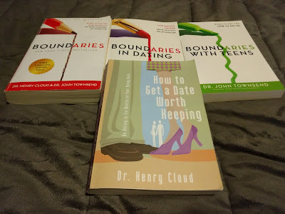

I kissed dating, hello! Revolutionize your dating life by realizing: “dating” and “relationship” are not the same thing,
Musings
Book Review Notes
Stop Spouse Hunting!
I was asked by a friend to summarize the dating advice/plan I learned from “How To Get A Date Worth Keeping: Be Dating In Six Months Or Your Money Back” (affiliate link), by Dr. Henry Cloud.
She said it would be helpful to get the gist of what the mindset shift is and why. The following summary is limited to the basic but fundamental mindset shift I went through and helped her go through. Once you understand this one simple shift, it radically changes everything about how you date, and it takes all the pressure off to “find a spouse”.
That mindset shift is this: Dating and a Relationship are NOT the same thing.
|
 |
|
Photo by Darrell Wolfe, my personal collection. “How To Get A Date Worth Keeping: Be Dating In Six Months Or Your Money Back” (affiliate link) |
{kind=link}
Note: The original “Boundaries: When to Say Yes, How to Say No To Take Control of Your Life” (affiliate link), really should be read before you read How to Get a Date Worth Keeping. It sets the larger context and stage for what it means to live in a healthy community and relationship with other humans of all kinds. Once you have a handle on Boundaries, then move on to the other books in any order you prefer.
Disclaimer:
There’s WAY more to this book than I could possibly explain in a blog post (it took a whole book to say it). There is more background, a hundred why-behinds, more steps, a detailed step-by-step plan, examples and real-life stories, etc… the book is linked in this post. Read it!
That being said, at a 1,000-foot view, here’s the bottom line.
We are using dating and relationship interchangeably, and they’re not the same, nor should they be. Dating and Relationship are two different things, even if you go on dates while in a relationship.
The ultimate goal is a relationship, but not with every person you date, not immediately.
The purpose of Dating is to help you grow, help the other people grow, and discover things about yourself and others that you want to avoid or take into the next relationship.
0. Phase Zero: Throw away your list. You are not spouse shopping.
That’s right. Although the ultimate goal, down the road, is to get married, the dating phase is not about hunting for a spouse. Not by a long shot. In fact, without the dating phase, you are most likely to choose the wrong spouse, if you find one at all.
If you have a list of your “perfect mate”, you will avoid everyone who isn’t checking off your list. You will get so pigeonholed, that you will miss the one God has for you. Let’s just assume that your picker is broken or you’d be married already to a great spouse you are happy with.
The dating phase is where you heal and grow and learn about people.
- Phase One: Dating at least six months, NO COMMITMENTS.
Date as many people as possible without misleading them (be open about it) but without committing to any one person.
A date is: go out, do a thing with a person, go home. New and Interesting people and experiences. Then leave them alone. You can go out again with them, but…
A date is NOT: texting each other constantly, checking in to see how they are, good morning and goodnight texts, cutsie back and forths, dropping by for no reason. These are romance behaviors and do not belong in the dating phase.
The dating phase is intended for a person to go on dates with as many people as possible, build awareness of the types of people available, character traits that people have you like and those you cannot accept, and it helps you reveal to yourself areas, responses and character issues you need to work on.
During this phase, you are growing as a person and helping others grow. You may even be the first person to show someone they should be raising their own standards and you helped them see that by being a safe space for the to learn. And they are showing you traits and characteristics you either cannot live with or never knew were available.
The opposite of dating non-exclusively for a period of time is “serial-daters” who basically run from one serious relationship to another without taking a significant time between to date casually. This is almost always a sign of an emotionally unhealthy individual who needs healing. This is where I was before reading these books.
By the end of this phase, you can make a new list. This time it is not what kinds of things he/she likes to do, eat, or wear… but a list of characteristics and character traits that you believe would be important in a future spouse. Make a list of deal-breakers, must-haves, and just wants. The book explains the difference in lists.
Eventually, you find a person you would like to date exclusively, and this person agrees.
You’ve thought both logically (evaluated them as you would a candidate for a job, and made sure to run red flags past your friends and mentors) as well as emotionally (how do I feel about this person and about myself when I’m with them).
If your logic and emotions agree, and certain prerequisites you determined during the dating phase are met, and of this person agrees, you move to exclusively date each other.
All manner of marriage questions should be discussed, and you get to know each other. This is the “what if” questions, not the “will you” questions.
Exclusive dating should be 12-18 months before engagement is planned seriously. But by about 18 months, the relationship should either be moving toward engagement or it’s probably time to end it. This timeframe is a general rule of thumb, not a specific hard line. Each person and couple is different.
If you and this person both feel sure you want to commit for life, you move to engagement.
You:
- Read marriage books together
- Attend conferences.
- See a premarital Counselor (who’s job should be to talk you out of it, because if he/she pushes and uncovers everything and you still want to proceed, then it’s real).
- Solicit LOTS of feedback from friends and family to make sure you are not making a mistake.
- Plan the wedding but more importantly, plan the marriage.
Since you’ve spent all the prep time, there need be no specific timeframe here. Maybe 2-6 months is a good starting place.
Conclusion:
Throughout all these phases, You ASK FOR feedback from friends and mentors and pastors. You make sure you LISTEN to what they say.
Don’t dismiss their feedback as “you just don’t understand”. Take anything anyone says seriously. Even if they’re wrong, ask yourself if they’re seeing something you’re unwilling to see.
Get married, keep dating, keep going to marriage conferences, keep working at it with drive and purpose. You don’t get to settle once you get rings, that’s when the real work starts.
If you regret it, you probably didn’t follow this process or ask for enough feedback.
Click here to order from amazon:
“How To Get A Date Worth Keeping: Be Dating In Six Months Or Your Money Back” (affiliate link), by Dr. Henry Cloud.Your Turn: Comment on the post below.
Marrieds: What was your experience? How would this have changed things for you if you didn’t do it this way?
Singles: Did anything in this post suprise you? What do you think about changing the way you tink about dating?